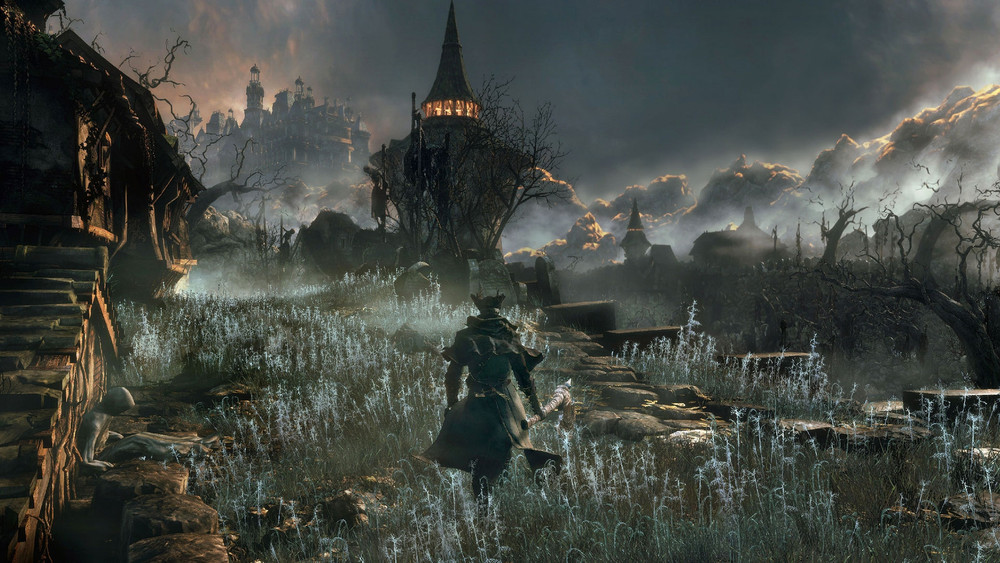
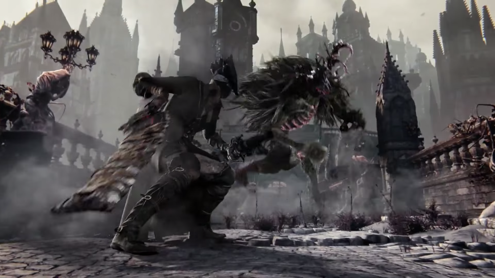
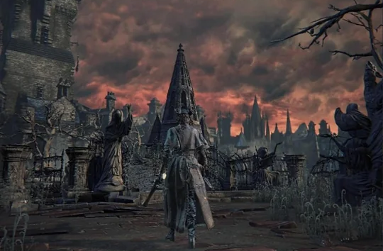
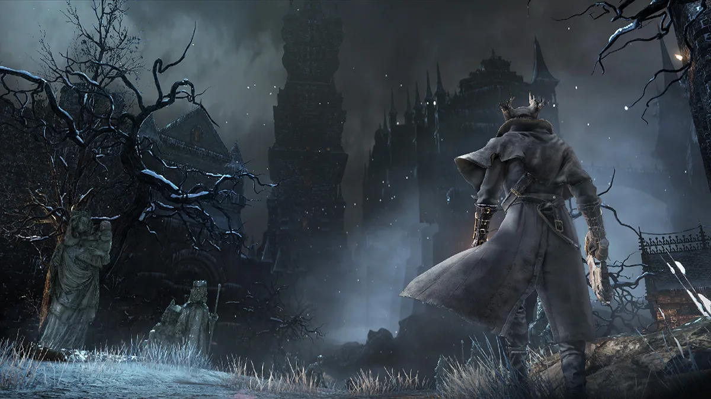
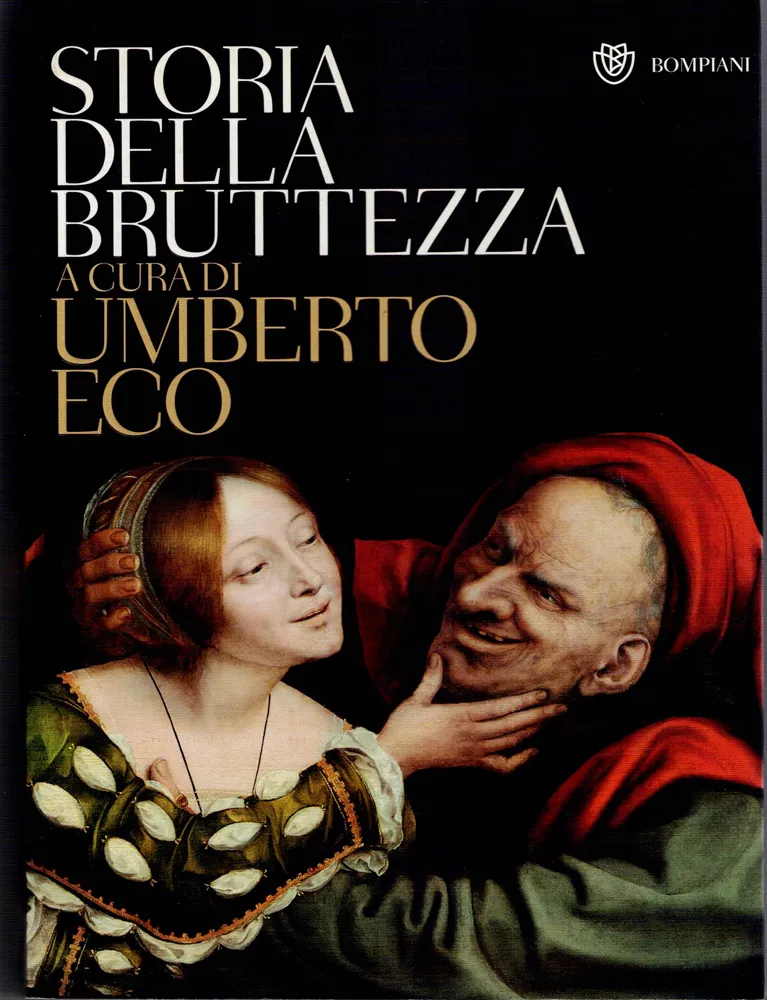
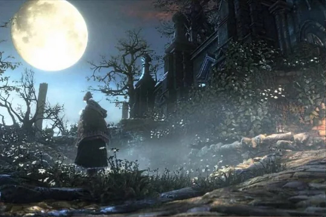
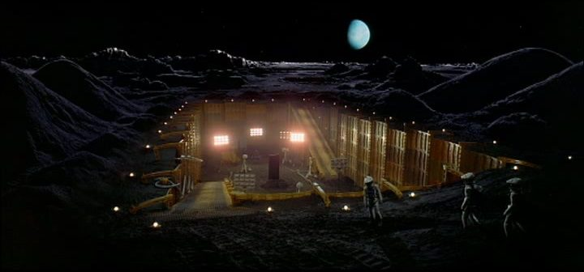
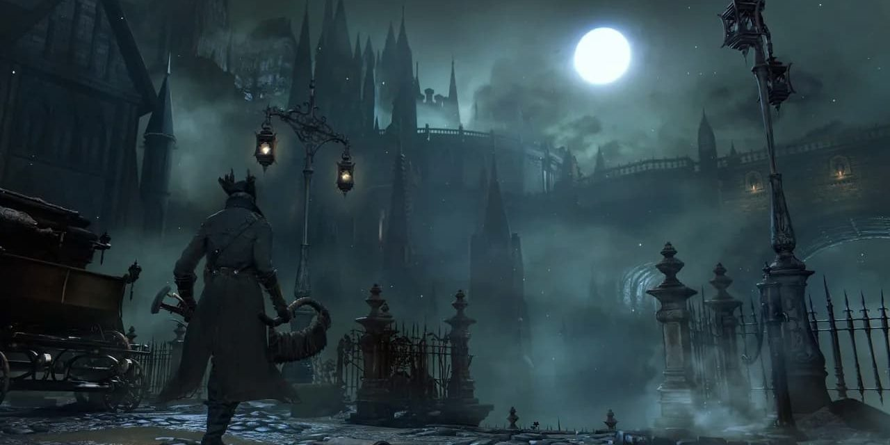
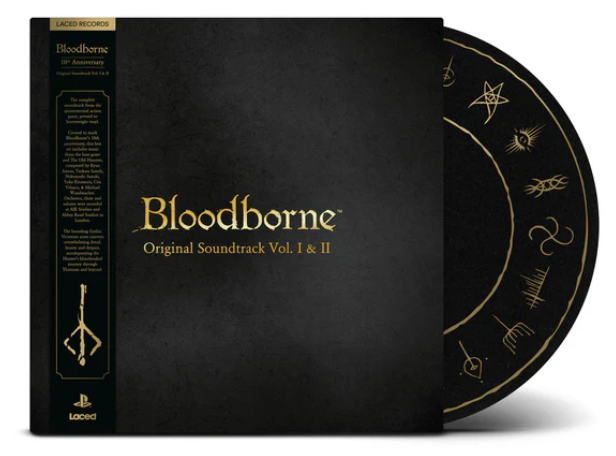
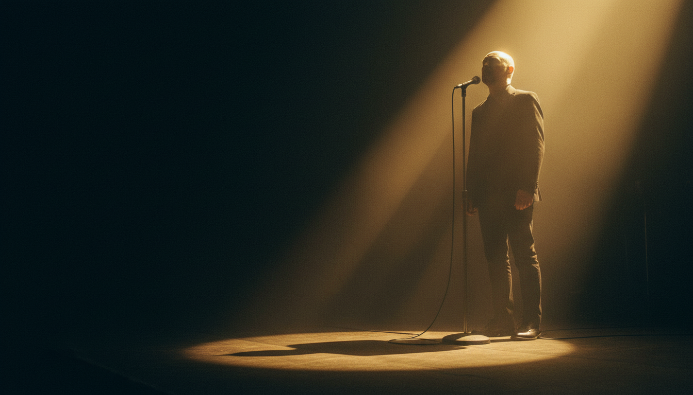

Bloodborne è per molti il vertice della formula FromSoftware — un incubo di design sorretto da quella che chiamo la sublime orchestra dell'orrore. Il soldout del boxset Laced Records e l'annuncio di un film animato Sony ci dicono che l'abisso sta per tornare. Come si trasporta un orrore così viscerale fuori dal videogioco senza tradirlo?

L'orrore — la lore di Yharnam
Immaginate un miracolo liquido capace di curare ogni piaga e potenziare il corpo. Il problema non è il fluido — è il contenitore. Il corpo umano è troppo fragile per reggere il peso di una natura divina. Bloodborne è il diario di questo collasso.
La civiltà dei Pthumeriani visse in simbiosi con i Grandi Esseri — entità che sovrastavano l'intelletto umano come l'oceano sovrasta una singola goccia. Da quel contatto filtrò il sangue antico: un miracolo che prometteva di riparare la carne e spalancare la mente. Il sangue li elevò solo per poterli divorare meglio. I Pthumeriani scomparvero, lasciandosi alle spalle le ossa di una civiltà che aveva scambiato la propria umanità con il potere.


La bestia e il cacciatore — due facce dello stesso collasso.
Secoli dopo, Lawrence fondò la Chiesa della Cura, portò il fluido a Yharnam e fece una promessa: venite, bevete e guarite. Per capire il disastro che seguì dobbiamo recuperare un concetto di Tommaso d'Aquino: la natura. Non un'etichetta — un motore. È il modo in cui una cosa sta al mondo per esprimere ciò che è. Quando la materia non è adeguata alla forma, quell'ente si deforma, perde integrità — diventa, in senso tecnico, mostruoso. La materia umana non può reggere la forma di un Dio. Per questo Yharnam si riempì di bestie.
Bloodborne non è una storia di mostri, ma la cronaca di cosa succede quando la natura dell'uomo viene corrotta dalla brama di ciò che non le appartiene. È l'orrore massimo — viscerale, cosmico, imperdonabile.

Il sublime — quando l'orrore affascina

Umberto Eco, Storia della bruttezza — Bompiani
Eppure Bloodborne ci attrae profondamente. Perché? La risposta è nel concetto di sublime. Aristotele nella Poetica scriveva che le cose viste con disgusto nella realtà le guardiamo con piacere nell'arte, se l'imitazione è maestosa. Plutarco aggiungeva che il brutto imitato dall'arte riceve un riverbero di bellezza dalla maestria dell'artista.
Nel 1757 Edmund Burke pubblica l'opera che cambia tutto: Indagine sull'origine delle idee del sublime e del bello. Il bello imita ciò che è armonioso. Il sublime si ha quando l'arte imita il caos. Umberto Eco lo descrive nella Storia della bruttezza: si prova il sublime di fronte a un temporale, a un mare in tempesta, ad abissi, oscurità, solitudine. Tutte impressioni dilettevoli quando l'orrore non può possederci.
La condizione è precisa: il caos deve essere mediato, tenuto a distanza. Quando accade, il terrore si trasforma in brivido di meraviglia. L'arte fornisce questa tettoia — tanto più è strutturata la forma artistica, tanto più è potente il fascino.
In Bloodborne questo diventa sublime ludico. Miyazaki deve narrare lo sfacelo di Yharnam rendendolo esteticamente sublime. Level design, character design e musica agiscono come quel riverbero formale di bellezza di cui parlava Plutarco.
L'orchestra — tre ambiti del caos limitato
Per sublimare il caos dell'orrore in musica, lo si deve imbrigliare in una forma rigorosa: il caos c'è, lo senti, ma è tenuto a distanza da una struttura che non cede. Ho individuato tre ambiti in cui questa ricetta è perfettamente applicata.

Sei compositori, tre americani e tre giapponesi, con stili diversi. Caos autoriale tenuto a bada da una restrizione spietata: solo archi, ottoni, coro e percussioni. Nessun legno. Flauti, oboi, clarinetti sono gli strumenti che respirano — toglierli significa togliere all'orchestra il respiro. Un'orchestra senza respiro per narrare una città che ha perso la libertà della propria natura. Il coro segue il modello del canto gregoriano medievale in latino, deformato fino all'irriconoscibile.

Kubrick, 2001: Odissea nello spazio — il Kyrie di Ligeti sul monolito nero
Il risultato è un orrore musicale affascinante come il Kyrie di Ligeti nella scena del monolito nero in 2001: Odissea nello spazio — così misterioso e spaventoso, eppure irresistibile. Le scelte stilistiche di Kubrick sono state probabilmente fondamentali per i compositori del gioco. Nell'arte tutto si tiene.
Il caos musicale nasce dall'uso smodato del cromatismo. Il contraltare è radicale: il limite al caos armonico è il silenzio. In Bloodborne la musica tace per la maggior parte del tempo — si esplora nel silenzio, si combattono i nemici comuni nel silenzio di una Yharnam semideserta. Solo nei boss, nei momenti decisivi, la musica entra. È la lezione di Ico e Shadow of the Colossus: il silenzio non è assenza, è la tettoia che crea l'attesa e amplifica l'impatto. Ecco perché la musica di Bloodborne, quando arriva, arriva come il destino.
I brani non seguono un 4/4 rassicurante. Le linee melodiche fluttuano senza agganciarsi a una scansione prevedibile. Nel tema principale, la voce solista e il controcanto della viola sembrano esistere fuori dal tempo. Eppure non appaiono caotici — perché sotto c'è qualcosa di immobile: i contrabbassi fermi sulla tonica minore. Un pavimento armonico che non scandisce nulla, semplicemente è lì. È la micropolifonia di Ligeti: dense trame polifoniche sovrapposte che insieme creano una nuvola caotica di suono, ancorata a un drone che impedisce la dissoluzione totale. È così che la musica produce terrore cosmico — e non semplice fastidio.

Il vinile, il film e una forma di superbia

Bloodborne Original Soundtrack Vol. I & II — Laced Records, soldout
Il boxset Laced Records è andato soldout in pochi giorni. Presto ci sarà anche un film animato. Si può trasportare il sublime del videogioco senza tradirlo?
La storia di Bloodborne è la cronaca di una perdita della forma. La sua musica ha cercato di imbrigliare il caos dell'incubo usando come tettoia il gameplay e il silenzio. Per dieci anni questa musica ha vissuto nel digitale — ora ha un peso fisico che si può stringere tra le mani. C'è qualcosa di poeticamente giusto in questa uscita: la musica che raccontava l'impossibilità dell'uomo finito di contenere l'infinito è diventata essa stessa un oggetto finito.
Eppure io quel vinile non l'ho comprato. Quella musica vive dentro l'ecosistema di limiti che abbiamo esplorato — ha bisogno del silenzio di Yharnam, della lotta del protagonista, della morte che interrompe il brano prima che tu possa contemplarlo completamente. Senza quei limiti, il sublime potrebbe mancare. Estrarre quella musica dal gioco per pretenderne la stessa catarsi in salotto mi suona come una forma di superbia.
Forse il segreto del soldout sta in una nostra nuova forma di superbia. Compriamo il vinile perché ci illudiamo di possedere l'abisso — mentre in realtà non lo vivremo mai con l'interezza con cui l'abbiamo vissuto nel videogioco. Stiamo cercando ancora una volta di contenere l'infinito in una forma finita?
